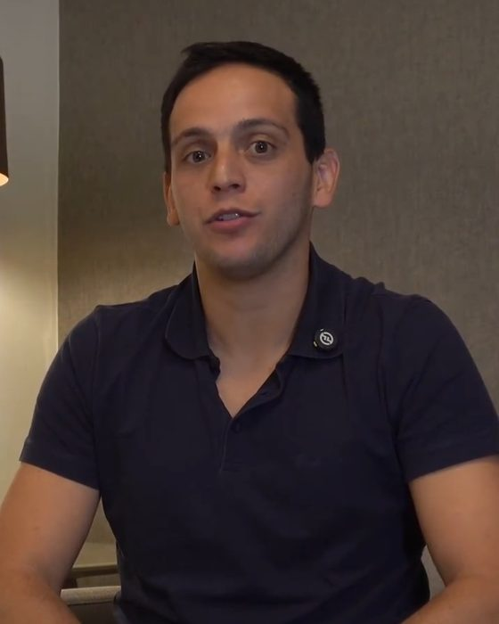
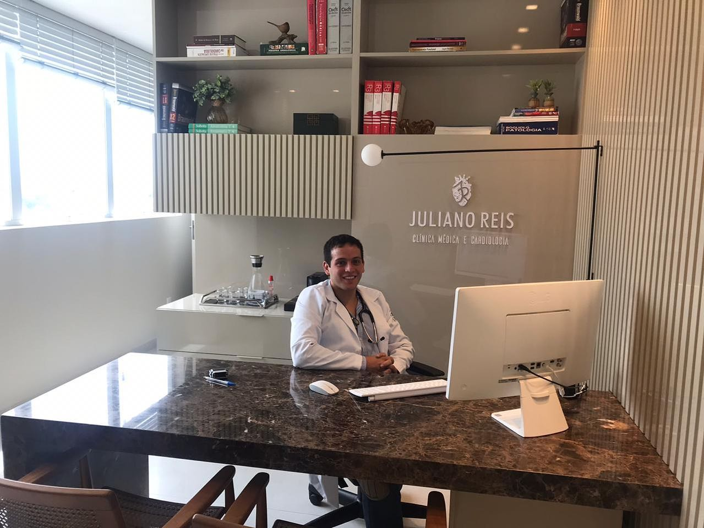

Cuido do coração e do resto junto, na mesma consulta.
Pressão alta, exame alterado e check-up do adulto, por quem coordena a UTI Cardiovascular.

Dr. Juliano Reis
Médico, CRM-MG 63389
Mestre em Ciências Cardiovasculares (FELUMA, 2025).
Cardiologia, RQE 45159Clínica Médica, RQE 38344Terapia Intensiva, RQE 55623
- Primeira consulta de cerca de 30 minutos, com hora marcada
- Três RQEs: Cardiologia, Clínica Médica e Terapia Intensiva
- Em Varginha, terça, quarta e quinta
Quatro motivos para marcar
Para cada queixa, o que acontece na consulta: o que examino, o exame que peço ou leio, e a decisão que sai dali.
Exame alterado parado na gaveta não responde nada. Mande uma mensagem pelo WhatsApp e veja os horários livres.
Pressão alta que não baixa ou que oscila
Confiro as medidas, os remédios e as doses que você usa. Pressão que não cede com remédio, ou que aparece cedo, pode ter uma causa por trás: aí eu investigo antes de só aumentar a dose.
Check-up do adulto
Coração, pressão, glicose, colesterol e rins na mesma consulta. Digo quais exames pedir na sua idade e no seu histórico, e quais você pode dispensar.
Exame que veio alterado
Colesterol, glicose, eletrocardiograma ou ecocardiograma fora do padrão. Leio o laudo, explico o que ele quer dizer no seu caso e decido: tratar, repetir ou investigar mais.
Cansaço, palpitação ou medo do coração
Coração disparado, fôlego curto na escada, cansaço fora do normal. Nem sempre é o coração: tireoide, anemia e remédio também causam. Examino e separo uma coisa da outra.
Quando não esperar a consulta
Dor forte no peito, falta de ar, desmaio ou fraqueza de um lado do corpo: procure o pronto-atendimento ou ligue 192.
O que a UTI traz para o consultório
Coordeno a UTI Cardiovascular. Lá, quem chega com problema no coração costuma ter rim, pulmão e remédio em jogo ao mesmo tempo. Não dá para tratar um sem conferir os outros. No consultório, faço a mesma conta.
Sou cardiologista, especialista em Clínica Médica e em Terapia Intensiva, com RQE nas três. Fiz mestrado em Ciências Cardiovasculares. A primeira consulta dura cerca de 30 minutos, com hora marcada.
Registros que você pode conferir
Os números são públicos: dá para conferir no portal do CFM. A formação está no currículo Lattes.
- Médico, CRM-MG
- 63389
- Cardiologia, RQE
- 45159
- Clínica Médica, RQE
- 38344
- Terapia Intensiva, RQE
- 55623
Mestre em Ciências Cardiovasculares pela FELUMA, 2023 a 2025. Artigos publicados em revistas científicas, como a Scientific Reports (Nature Portfolio).
O que pacientes escreveram no Google
"Sou paciente do Doutor Juliano a mais de 3 anos. [...] eu tive um diagnóstico não tão comum de pressão alta secundária. Tive todo suporte, averiguamos, fizemos tratamento e hoje vivo minha vida normal com a pressão estável."
Talita B.
"Pontualidade no atendimento e segurança em seu diagnóstico."
Marco S.
"Muita atenção e cuidado com paciente. Agradeço."
Raquel F.
Perguntas frequentes
Preciso ter algum sintoma para marcar?
Não. Pressão alta pode ser silenciosa: você pode ter e não sentir nada. Medir e conferir os exames é o que mostra.
O que entra no check-up do adulto?
Depende da sua idade, do seu histórico e dos exames que você já tem. Na consulta, digo o que pedir e por quê. O que você já fez entra na conta.
Quanto dura a consulta?
A primeira consulta dura cerca de 30 minutos, com hora marcada. O retorno, cerca de 10 minutos.
Preciso levar exames?
Leve os exames e as receitas dos remédios que você usa, se tiver. Se não tiver nenhum, a consulta começa pela sua história e eu peço o que faltar.
Quais dias o Dr. Juliano atende?
Terça e quarta, de manhã e à tarde. Quinta, a partir das 10h30. Feriados, não. Os horários livres você vê pelo WhatsApp.
Posso falar de vida sexual na consulta?
Pode, como qualquer outro assunto. Alguns remédios mexem nisso, e contar ajuda a decidir o tratamento. Se preferir, é só dizer na consulta que quer conversar sobre isso.
Uso anabolizante ou suplemento. Posso falar disso na consulta?
Pode. O que você usa muda a leitura da pressão, dos exames e do coração. Conversa de consulta, sem julgamento e sem sermão.

Onde atendo
Consultório próprio, em Varginha, MG.
- Endereço
- R. Dr. Arnaldo, 135, sala 12, Vila Pinto, Varginha, MG. CEP 37014-030.
- Dias
- Terça e quarta, de manhã e à tarde. Quinta, a partir das 10h30.
- Consulta
- Cerca de 30 minutos na primeira, com hora marcada. Retorno de cerca de 10.
- Como marcar
- Pelo WhatsApp, no botão Agendar pelo WhatsApp.

Marque a sua consulta em Varginha
Mande uma mensagem pelo WhatsApp, veja os horários livres de terça, quarta e quinta e escolha o seu. A primeira consulta dura cerca de 30 minutos.